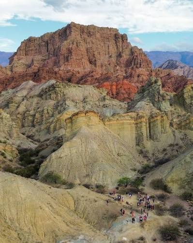
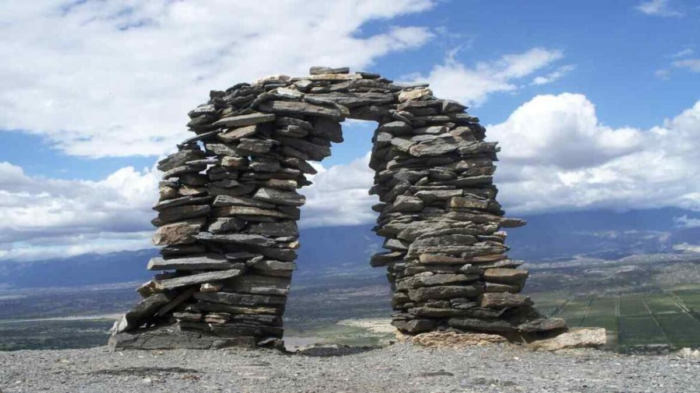
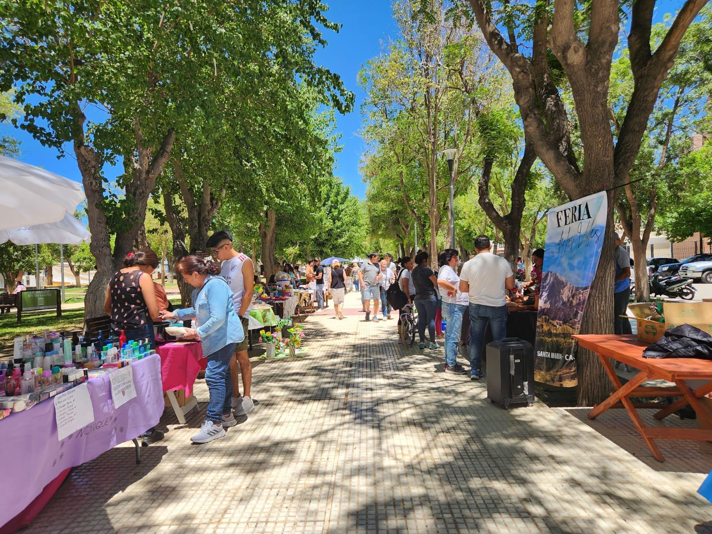
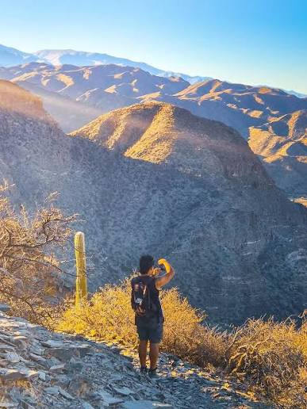
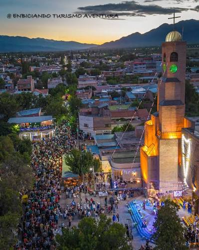
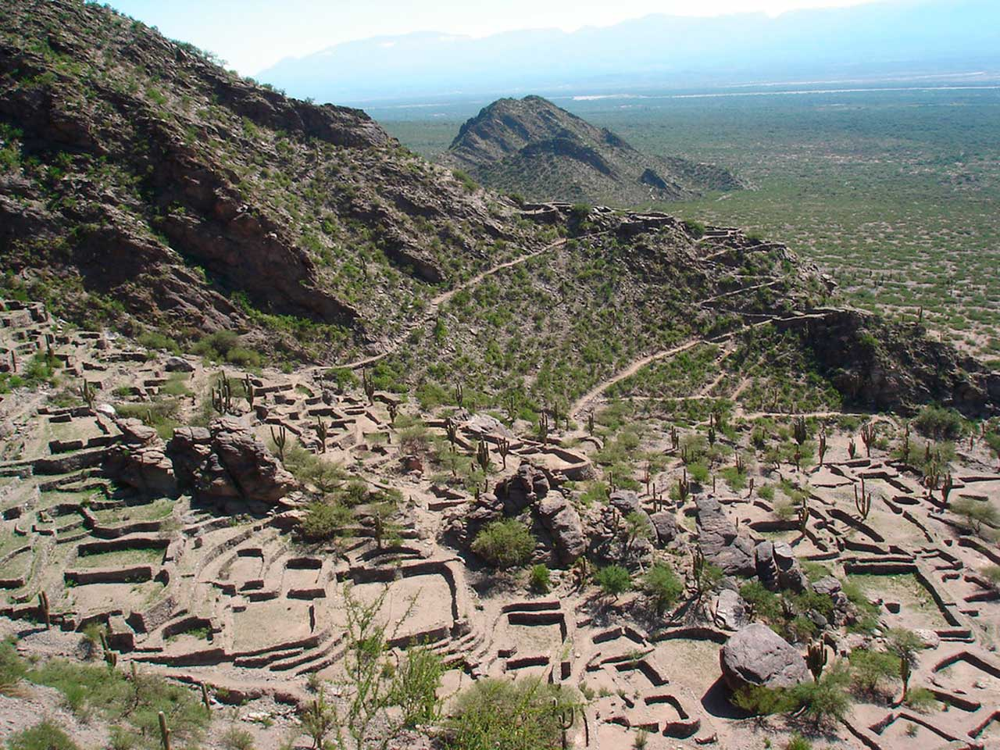

Naturaleza
Cerro de los Siete Colores
Ubicación: departamento Santa María, Catamarca.
Formaciones geológicas de distintas tonalidades que permiten apreciar la riqueza natural y geológica de los Valles Calchaquíes.
Destino Santa María · Catamarca
Paisajes, historia y rincones que revelan la esencia de Santa María y sus alrededores
Santa María y sus alrededores
Catamarca

Naturaleza
Ubicación: departamento Santa María, Catamarca.
Formaciones geológicas de distintas tonalidades que permiten apreciar la riqueza natural y geológica de los Valles Calchaquíes.

Historia y patrimonio
Ubicación: aproximadamente 8 km al norte de la ciudad de Santa María.
Localidad de gran valor histórico y arqueológico. Entre sus atractivos destaca La Ventanita o Intiwatana, un portal de piedra relacionado con la observación solar.

Cultura
Ubicación: departamento Santa María, Catamarca.
Ciudad de los Valles Calchaquíes que reúne historia, arquitectura, museos, tradiciones y espacios culturales.
Paisajes
Cerro de los Siete Colores · Departamento Santa María, Catamarca. Formaciones geológicas de distintas tonalidades permiten apreciar la riqueza natural y geológica de los Valles Calchaquíes.


Memoria y cultura
Fuerte Quemado · Ubicación: aproximadamente 8 km al norte de la ciudad de Santa María. Localidad de gran valor histórico y arqueológico; entre sus atractivos destaca La Ventanita o Intiwatana, un portal de piedra relacionado con la observación solar.


Tucumán · aproximadamente 35 km de Santa María
Destino regional
Ubicación: provincia de Tucumán, aproximadamente 35 km de Santa María.
Importante asentamiento prehispánico del pueblo Quilmes. Se pueden recorrer sectores residenciales, estructuras defensivas y el Centro de Interpretación.